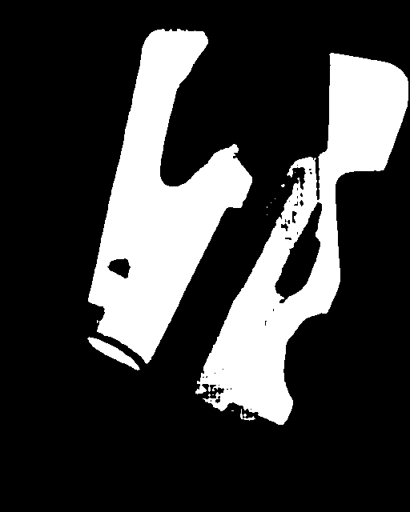
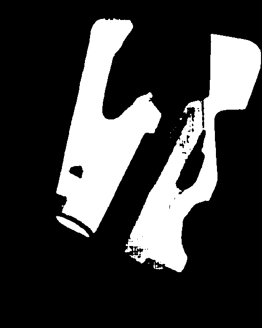

MSD_COCO Training Data
Training Images

Training Masks

Adil ZHUMGALBEKOV, City University of Hong Kong, azhumgalb3-c@my.cityu.edu.hk
Siu Tsun Wai, City University of Hong Kong, twsiu9-c@my.cityu.edu.hk
Index Terms—Transfer Learning, Zero-Shot Learning, Mirror Detection
Grounding-Dino stands at the forefront of zero-shot object detection, offering a groundbreaking approach. Its grounding module is instrumental in connecting textual phrases with specific image regions, empowering the model to identify objects in open-set scenarios. Despite its zero-shot learning prowess, limitations emerge in complex scenarios, particularly in detecting mirrors. To enhance this capability, we employ fine-tuning, leveraging the MMDetection library.
Utilizing Grounding DINO for mirror detection, we select a subset of the Mirror Segmentation Dataset (MSD). Despite its focus on segmentation, Grounding DINO's pre-trained knowledge compensates for the limited size of our training sample. We convert segmentation masks into bounding box annotations, bridging the gap for object detection.
All datasets can be found on GitHub: https://github.com/adisanlc/GE2340.git
Utilizing MMDe-tction’s framework, we make specific alterations to fine-tune Grounding-Dino. Pre-trained weights from diverse datasets enrich the model's knowledge, enhancing feature extraction for mirror detection. Despite the original architecture's retention, adjustments to optimizer settings, learning rate, and scheduler are crucial. Finetuning over 20 epochs yields superior results, with the final weights selected based on mean Average Precision (mAP).
Grounded-SAM, a fusion of Grounding-DINO and Segment Anything Model (SAM), excels in zero-shot segmentation. SAM's segmentation skills, combined with Grounding-DINO's bounding box generation, form a powerful tool for mirror segmentation. ViT-H SAM, with official pre-trained weights, facilitates the inference process.

The finetuned model significantly outperforms the unfinetuned across all metrics, demonstrating remarkable improvement in object detection accuracy, especially at higher IoU thresholds. The model's effectiveness in detecting mirrors and generating accurate bounding boxes is evident.


A comprehensive quantitative comparison with existing models showcases the significant improvement of the finetuned Grounded-SAM. Despite a substantially smaller training dataset, the finetuned model achieves lower MAE and higher IoU and Fβ scores, highlighting its efficiency in challenging mirror detection.

 

Comparisons between unfinetuned and finetuned models, alongside state-of-the-art counterparts, reveal the superior performance of the finetuned Grounded-SAM. Notably, the finetuned model reduces segmentation errors and occasionally outperforms established systems, emphasizing its efficacy in mirror detection.
In conclusion, our work demonstrates the effectiveness of fine-tuning Grounding-Dino and Grounded-SAM for mirror detection, even with limited data. The results open new possibilities for applying these models in various computer vision tasks, showcasing their versatility and practical utility.